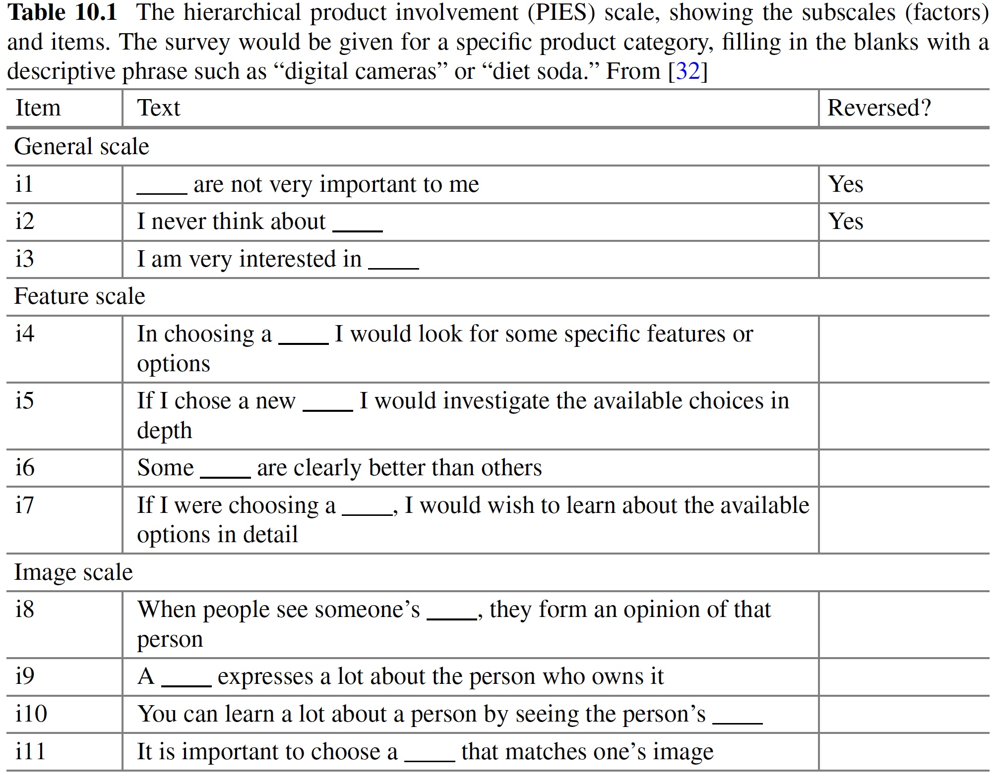

Análise Multivariada
Análise Fatorial Confirmatória
IFMG - Campus Formiga
24 de novembro de 2023
Análise Fatorial Confirmatória (CFA)
- CFA é um caso especial dos Modelos de Equações Estruturais (SEM).
Principais aplicações:
Avaliar a estrutura de escalas de pesquisas — os itens são carregados onde seria esperado?
Avaliar o ajuste/adequação de um modelo fatorial — o modelo proposto é melhor do que as alternativas?
Avaliar os pesos dos itens uns em relação aos outros e a uma escala – eles contribuem igualmente?
Modelar outros efeitos, como efeitos de métodos e relacionamentos hierárquicos.
CFA: Avaliação de Escala - PIES
Começamos considerando uma escala de pesquisa que busca avaliar o envolvimento com um produto.
CHAPMAN et al. (2014) proposuream esta escala.
Usando os itens exibidos na Fig. 1, esta escala reflete uma teoria em que o envolvimento com um produto é uma construção hierárquica que compreende 3 fatores:
- Envolvimento geral com uma categoria de produto,
- Envolvimento com as características do produto, e;
- Envolvimento com a categoria em termos de imagem pessoal.
- Neste instrumento, três subescalas refletem os 3 fatores que podem levar a pontuações mais altas ou mais baixas dependendo de como os consumidores veem um produto.
PIES: Instrumento

CFA: Avaliação de Escala - PIES
Por exemplo, profissionais de marketing, esperariam que câmeras digitais envolvessem os consumidores em termos das suas características técnicas e, assim, obtivessem uma pontuação elevada no envolvimento com as características.
Por outro lado, o vestuário é um componente-chave de imagem pessoal e pode-se esperar que obtenha uma pontuação elevada em termos de envolvimento com a imagem.
Um produto genérico como papel pode apresentar um baixo envolvimento do consumidor em todos os 3 factores, enquanto automóveis pode ter um envolvimento relativamente elevado em todos os três fatores.
Este modelo foi proposto como uma alternativa a um modelo de fator único de envolvimento com um produto, onde o envolvimento é simplesmente alto ou baixo em geral, sem diferenciação entre fatores como envolvimento com características ou imagem.
CFA: Avaliação de Escala - PIES
- O modelo de 3-fatores foi denominado PIES como uma abreviatura de “Product Involvement and Enthusiasm Scale”.
Pode ser usado em muitas situações de marketing:
Por exemplo, se avaliarmos que uma categoria de produto tem alto envolvimento em características, podemos desenvolver estratégias de comunicação e de posicionamento que enfatizem as especificações técnicas.
Também pode ser usado para informar a segmentação:
Se concluirmos que um determinado grupo demográfico considera a categoria de produto importante para sua imagem pessoal, então podemos direcioná-los com campanhas que destacam o produto em termos de imagem pessoal.
PIES: Modelo Estrutural
O modelo estrutural PIES propõe quatro construtos latentes (não observados) que fundamentam o envolvimento com o produto:
- um fator de envolvimento geral (abreviado como “Gnr”),
- um fator de escolha/característica (“Feature” ou “Ftr”),
- uma fator de imagem (“Img”), e;
- um fator PIE de ordem superior (envolvimento e engajamento do produto) que é concebido como o nível de interesse subjacente aos outros três fatores.
Este modelo de fatores hierárquicos é exibido na Fig. 2.
PIES: Modelo Estrutural

PIES: Modelo Estrutural
Os 3 fatores de envolvimento e o fator PIE de ordem superior são modelados como variáveis latentes (fatores )que não são diretamente observadas.
Mas são concebidas para influenciar os itens da pesquisa que os manifestam.
Na pesquisa, cada fator é representado por um subescala composta por vários itens, conforme mostrado na Fig. 1.
PIES: Modelo Estrutural Completo
No modelo hierárquico, o fator PIE geral não influencia diretamente nenhum item da escala.
Em vez disso, influencia os outros três fatores como uma variável latente de ordem superior.
O modelo estrutural completo, mostrando a relação hierárquica dos construtos latentes e os itens manifestos da escala que são observados para cada construto, é mostrado na Fig. 3.
PIES: Modelo Estrutural Completo
PIES: Pergunta de um Analista
Uma pergunta para os autores do PIES poderia ser: o esquema PIES é um bom modelo para algum conjunto de respostas para os itens do instrumento proposto (Fig. 1)?
Se confirmarmos que o PIES é um bom modelo, estaremos mais confiantes na utilização dos dados deste questionário para fazer inferências sobre o envolvimento com um produto.
Tentaremos mostrar como a Modelagem de Equações Estruturais (SEM) em R pode confirmar, ou não, o modelo PIES.
PIES: Análise Fatorial Confirmatória
Para isso, utilizaremos uma aplicação específica da SEM conhecida como Análise Fatorial Confirmatória (CFA).
Na CFA, especifica-se a estrutura fatorial e pergunta-se:
“Quão bem o modelo proposto é consistente com a estrutura dos dados?”
Também abordaremos uma questão intimamente relacionada:
“Esse modelo é melhor do que algum outro modelo?”
Etapas Gerais da CFA
Defina seu modelo hipotético: relações das variáveis latentes com as variáveis manifestas.
Defina um ou mais modelos alternativos que sejam razoáveis, mas que você acredita serem inferiores.
Ajuste os modelos aos dados.
Determine se o seu modelo é bom o suficiente (analise as medidas de qualidade do ajuste).
Determine se o seu modelo é melhor que as alternativas.
Interprete os resultados.
Simulando dados
Para demonstrar a CFA, simularemos dados de uma estrutura fatorial conhecida que corresponde ao modelo PIES da Fig. 1.
Usaremos esses dados para demonstrar como testar um modelo teórico com a CFA.
Em seguida, avaliaremos modelos alternativos e discutiremos a importância da comparação de modelos para a CFA.
Simulando dados
Utilizaremos o pacote lavaan para SEM (e CFA), incluindo a simulação de dados simulação e ajuste de modelos
Ampliaremos os recursos do pacote lavaan para comparação e visualização de modelos usando dois outros pacotes, semTools e semPlot.
Simulando dados
PIES: Simulação

Agora…dados!
11 itens para dados simulados sobre Product Interest and Engagement Data (PIES), classificados em Escala tipo Likert de 7 pontos.
Itens:
| Paraphrased item | |
|---|---|
| not important [reversed] | never think [reversed] |
| very interested | look for specific features |
| investigate in depth | some are clearly better |
| learn about options | others see, form opinion |
| expresses person | tells about person |
| match one’s image |
Etapa 1: Importar e Preparar os dados
Importando os dados
Nomeando:
vars n mean sd median trimmed mad min max range skew
NotImportant 1 3600 4.34 1.00 4 4.32 1.48 1 7 6 -0.07
NeverThink 2 3600 4.10 1.05 4 4.09 1.48 1 7 6 -0.01
VeryInterested 3 3600 4.11 1.02 4 4.10 1.48 1 7 6 -0.01
LookFeatures 4 3600 4.04 1.05 4 4.04 1.48 1 7 6 -0.07
InvestigateDepth 5 3600 4.00 1.08 4 4.00 1.48 1 7 6 -0.02
SomeAreBetter 6 3600 3.92 1.04 4 3.94 1.48 1 7 6 -0.08
LearnAboutOptions 7 3600 3.87 1.04 4 3.88 1.48 1 7 6 0.02
OthersOpinion 8 3600 3.90 1.11 4 3.92 1.48 1 7 6 0.02
ExpressesPerson 9 3600 4.02 1.01 4 4.01 1.48 1 7 6 0.07
TellsAbout 10 3600 3.90 1.02 4 3.92 1.48 1 7 6 -0.04
MatchImage 11 3600 3.85 1.01 4 3.86 1.48 1 7 6 0.01
kurtosis se
NotImportant -0.01 0.02
NeverThink -0.07 0.02
VeryInterested -0.13 0.02
LookFeatures -0.05 0.02
InvestigateDepth -0.07 0.02
SomeAreBetter 0.02 0.02
LearnAboutOptions -0.10 0.02
OthersOpinion -0.12 0.02
ExpressesPerson -0.05 0.02
TellsAbout 0.05 0.02
MatchImage -0.01 0.02Modelo CFA alvo para PIES
Definiremos um modelo de 3 fatores com fatores potencialmente correlacionados.

Cmodelo comparativo para PIES
Compare um modelo de 1 fator em que todas as variáveis são carregadas em um fator de interesse.
O modelo de 3 fatores deve se ajustar melhor que isso para ser relevante!

Ajuste de Modelos: Medidas de Qualidade do Ajuste
Global fit indices
Exemplo: Comparative Fit Index (CFI). Tentativas de avaliar o ajuste “absoluto” versus os dados. Medidas não muito boas, mas estabeleça uma barra mínima: quero ajuste > 0,90.$
Approximation error and residuals
Exemplo: Standardized Root Mean Square Residual (SRMR). Diferença entre o matriz de covariância dos dados e a matriz do modelo ajustado.
- Desejamos \(SRMR <0,08\). Para Erro quadrático médio de aproximação, desejamos CI inferior \((RMSEA) <0,05\).
Information Criteria
Exemplo: Critério de Informação de Akaike (AIC). Avalia o ajuste do modelo versus os dados observados. Nenhuma interpretação absoluta, mas quanto menor, melhor. Diferença de 10 ou mais é grande.
Código R para ajustar um modelo 3-fatores
É muito simples definir e ajustar um CFA em R:
Ajuste de Modelos: Modelo 1-Fator
piesModel1 <- " Interest =~ i1 + i2 + i3 + i4 + i5 + i6 + i7 +
i8 + i9 + i10 + i11 "
pies.fit1 <- cfa(piesModel1, data=pies.data)
summary(pies.fit1, fit.measures=TRUE)
Comparative Fit Index (CFI) 0.672 # Bad
Akaike (AIC) 108812.709 # Much higher
Bayesian (BIC) 108948.860
RMSEA 0.143 # Bad
90 Percent Confidence Interval 0.139 0.147
P-value RMSEA <= 0.05 0.000 # Bad
SRMR 0.102 # BadAjuste de Modelos: Modelo 3-Fatores
> piesModel3 <- " General =~ i1 + i2 + i3
+ Feature =~ i4 + i5 + i6 + i7
+ Image =~ i8 + i9 + i10 + i11 "
> pies.fit3 <- cfa(piesModel3, data=pies.data)
> summary(pies.fit3, fit.measures=TRUE)
Comparative Fit Index (CFI) 0.975 # Excellent
Akaike (AIC) 105821.776 # Much lower
Bayesian (BIC) 105976.494
RMSEA 0.041 # Excellent
90 Percent Confidence Interval 0.036 0.045
P-value RMSEA <= 0.05 1.000 # Good
SRMR 0.030 # ExcellentO modelo de 3 fatores se ajusta muito melhor a esses dados.
Model Paths
Latent Variables Estimate Std.Err Z-value P(>|z|)
General =~
i1 1.000
i2 0.948 0.042 22.415 0.000
i3 1.305 0.052 25.268 0.000
Feature =~
i4 1.000
i5 1.168 0.037 31.168 0.000
i6 0.822 0.033 25.211 0.000
i7 1.119 0.036 31.022 0.000
Image =~
i8 1.000
i9 0.963 0.028 34.657 0.000
i10 0.908 0.027 33.146 0.000
i11 0.850 0.027 31.786 0.000Visualize

Alguns outros pontos sobre CFA
Consertando caminhos
Para tornar um modelo identificável, um caminho deve ser fixado entre um fator e uma variável. Isso torna os caminhos interpretáveis em relação a essa variável. Padronizar os preditores é importante para que sejam comparáveis!
Modelagem das Correlações entre Fatores
Você pode especificar algumas correlações de fatores como baixas (por exemplo, 0,10) ou altas (por exemplo, 0,50). Isso é fácil de fazer em R; difere em outros pacotes.
Modelos Hierárquicos
Você pode modelar fatores de ordem superior, como “interesse no produto” geral.
A CFA permite variáveis latentes associadas a outras variáveis latentes.
Cargas fatoriais versus coeficientes de caminho
Por padrão, EFA e CFA relatam factor::coeficientes variáveis em escalas diferentes.
- Cargas Fatoriais na EFA
As cargas fatoriais da EFA estão na escala r de Pearson, ou seja, são coeficientes de correlação entre o fator e a variável.
- Coeficientes de caminho CFA
Os caminhos do CFA estão na(s) própria(s) escala(s) das variáveis, fixadas em 1,0 para uma variável por fator.
Se você padronizar (\(Z = \frac{X-\bar{X}}{sd(X)}\)) as variáveis e fixa a variância dos fatores em 1.0, eles estarão na escala r.
Observação: Ter caminhos na escala original é muitas vezes útil na análise de pesquisas, porque é fácil de comparar com a escala em si.
Pontos Principais
Se você usa escalas com vários itens, verifique-as com EFA e CFA! Não apenas presuma que sua escala está correta ou que os itens são carregados onde você espera.
Se você tiver scores de vários itens - como itens que somam uma pontuação de “satisfação” - considere usar pontuações fatoriais.
Se você propor um modelo complexo, prove com o CFA que ele é melhor que as alternativas.
Esta área tem muito jargão, mas não é intrinsecamente difícil… e é muito melhor do que ignorá-lo e esperar pelo melhor! SPSS, R, SAS e Stata todos possuem ferramentas para análise fatorial.
Workflow para desenvolvimento em escala
Identifique os fatores de possível interesse
Escreva muitos itens para esses fatores e implemente a uma pesquisa
Use a EFA para identificar se os fatores se sustentam e quais itens são correlacionados com estes fatores.
Repita 1-3 até acreditar que possui fatores confiáveis e bons itens.
Use o CFA para demonstrar que os fatores e itens se mantêm em uma nova amostra
Aprendendo mais: Livros
Brown (2015), Confirmatory Factor Analysis for Applied Research. Um texto bom e prático sobre CFA para as ciências sociais.
Kline (2015), Principles and Practice of Structural Equation Modeling. O guia definitivo para o uso de CFA e SEM em ciências sociais.
DeVellis (2011), Scale Development. Um guia muito prático e legível para construir boas escalas de pesquisa.
Notas sobre software: pacotes R
corrploté útil para explorar matrizes de correlação com vistas a uma análise fatorial.psychtem muitas opções para análise fatorial exploratória e outras aplicações psicométricas (pesquisa/teste).lavaané um pacote SEM/CFA fácil de usar. Altamente recomendado.semPlotcria diagramas de caminho SEM/CFA básicos conforme mostrado nestes slides.DiagrammeRcria diagramas de caminho de qualidade de publicação. Isso requer especificação manual — tediosa, mas não difícil — para diagramas EFA/CFA/SEM.OpenMXfornece opções avançadas para SEM, como modelos de efeitos mistos.